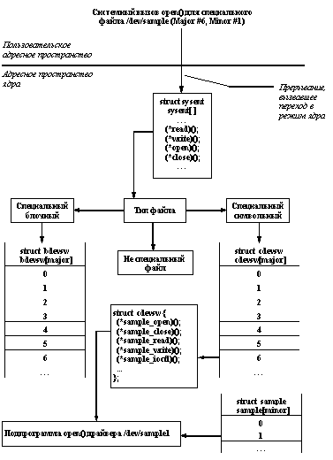

Управление внешними устройствами - это одна из важнейших функций любой операционной системы. Система должна обеспечивать эффективный и удобный доступ к периферийным устройствам, а также обеспечивать возможность унифицированной разработки программного обеспечения для вновь подключаемых внешних устройств. Рассмотрим, как эта проблема решается в ОС UNIX.
В п. 2.4.4 мы уже отмечали, что для доступа к внешним устройствам в ОС UNIX используется универсальная абстракция файла. Помимо настоящих файлов (обычных файлов или каталогов), которые реально занимают память на магнитных дисках, файловая система содержит так называемые специальные файлы, для которых, как и для настоящих файлов, отводятся отдельные i-узлы, но которым на самом деле соответствуют внешние устройства. Это решение позволяет естественным образом работать в одном и том же интерфейсе с любым файлом или внешним устройством. (На самом деле, в некоторых случаях нестандартных внешних устройств приходится выходить за пределы стандартного интерфейса. Подробности и детали приводятся в разделе 3.3.).
Любому программисту должно быть ясно, что простое объявление внешнего устройства специальным файлом не даст возможности работать с этим устройством, если не создан и соответствующим образом не подключен к системе специальный программный код, соответствующий специфике данного устройства. Как и в большинстве современных операционных систем, такого рода программный код в ОС UNIX называется драйвером устройства (в этом контексте слово драйвер лучше всего понимать в значении "управляющий").
Для профессионалов в области операционных систем драйверы ОС UNIX, в сущности, не представляют ничего нового. По-простому говоря, в любой системе драйвер устройства - это многовходовой программный модуль со своими статическими данными, который умеет инициировать работу с устройством, выполнять заказываемые пользователем обмены (на ввод или вывод данных), терминировать работу с устройством и обрабатывать прерывания от устройства. Однако, в любой операционной системе имеется своя технология разработки драйверов. В частности, в ОС UNIX различаются символьные, блочные и потоковые драйверы.
Символьные драйверы являются простейшими в ОС UNIX и предназначаются для обслуживания устройств, которые реально ориентированы на прием или выдачу произвольных последовательностей байтов (например, простой принтер или устройство ввода с перфоленты). Такие драйверы используют минимальный набор стандартных функций ядра UNIX, которые главным образом заключаются в возможности взять данные из виртуального пространства пользовательского процесса и/или поместить данные в такое виртуальное пространство.
Блочные драйверы - более сложные. Они работают с использованием возможностей системной буферизации блочных обменов ядра ОС UNIX. В число функций такого драйвера входит включение соответствующего блока данных в систему буферов ядра ОС UNIX и/или взятие содержимого буферной области в случае необходимости.
Наконец, наиболее сложной организацией отличаются потоковые драйверы. Фактически, такой драйвер представляет собой конвейер модулей, обеспечивающий многоступенчатую обработку запросов пользователя. Потоковые драйверы в среде ОС UNIX в основном предназначены для реализации доступа к сетевым устройствам, которые должны работать в соответствии с многоуровневыми сетевыми протоколами.
Подробности по поводу разных способов организации драйверов в ОС UNIX см. в разделе 3.3.
Последний момент, на который мы хотим обратить внимание в этом пункте, состоит в том, что (опять же, как и в большинстве развитых операционных систем) в ОС UNIX возможны два способа включения драйвера в состав ядра ОС. Первый способ состоит в полном включении драйвера в состав ядра на стадии генерации системы (т.е. драйвер статически объявляется частью ядра системы). Второй способ позволяет обойтись минимальным количеством статических объявлений на стадии генерации ядра (фактически, обеспечиваются лишь необходимые элементы статических таблиц). В любой момент работы системы такой драйвер может быть динамически загружен в ядро системы. После появления (статического или динамического) в ядре ОС UNIX драйверы всех разновидностей функционируют единообразно.
Независимо от типа файла (обычный файл, каталог, связь или специальный файл) пользовательский процесс может работать с файлом через стандартный интерфейс, включающий системные вызовы open, close, read и write. Ядро само распознает, нужно ли обратиться к его стандартным функциям или вызвать подпрограмму драйвера устройства. Другими словами, если процесс пользователя открывает для чтения обычный файл, то системные вызовы open и read обрабатываются встроенными в ядро подпрограммами open и read соответственно. Однако, если файл является специальным, то будут вызваны подпрограммы open и read, определенные в соответствующем драйвере устройства (рисунок 2.3).
Кратко поясним этот рисунок. С каждым специальным файлом в системе связаны старший (major) и младший (minor) номера. После того, как (по содержанию i-узла) файловая система распознает, что данный файл является специальным, ядро ОС UNIX использует старший номер специального файла как индекс в конфигурационной таблице драйверов устройств. Поддерживаются две раздельные таблицы для символьных и блочных специальных файлов (или соответствующих драйверов). Для блочных драйверов используется системная таблица bdevsw, а для символьных - cdevsw. В обоих случаях элементом таблицы является структура (в терминах языка программирования Си), элементы которой содержат указатели на подпрограммы соответствующего драйвера. Допускается (и на самом деле используется) реализация драйверов, которые одновременно могут обрабатывать и блочный, и символьный ввод/вывод. В этом случае для драйвера будут существовать и элемент таблицы bdevsw, и таблицы cdevsw.

Рис. 2.3. Логическое представление открытия специального символьного файла
Старшему номеру специального файла блочного или специального файла, вообще говоря, соответствуют разные драйверы. Например, символьному специальному файлу /dev/tty и блочному специальному файлу /dev/swap в UNIX System V соответствует старший номер 6. Но поскольку первый специальный файл - символьный, а второй - блочный, они могут использовать один и тот же старший номер, хотя им соответствуют разные драйверы. В любом случае, младший номер специального файла передается в качестве параметра соответствующей функции драйвера, который волен использовать его любым образом, хотя обычно младший номер используется в качестве номера устройства, обслуживаемого аппаратным контроллером, которым на самом деле управляет данный драйвер. Другими словами, один драйвер как программная единица может управлять несколькими физическими устройствами.
Предыдущая глава | Оглавление | Следующая глава
Comments: [email protected]
Copyright © CIT